4.2 智能问答小助手¶
大家可以通过链接：https://www.coze.cn/s/zomzIsRb0hs/ 访问：
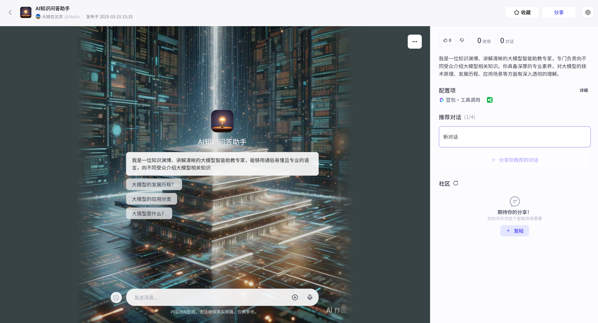
智能问答小助手智能体主要功能是根据用户输入，结合不同数据源（如文件、图像），通过大语言模型和插件进行问题解析、答案生成，并对用户回答进行引导和判断，具体如下：
- 数据输入与检查：接收用户输入，包括文本、文件链接（doc）和图像链接（image）。通过 “判断是否上传文件” 和 “判断是否上传图片” 节点，分别检查是否有文件和图片上传。若有文件上传，使用 “LinkReaderPlugin” 插件获取文件（如网页、PDF）内容；若有图片上传，使用 “imgUnderstand” 插件理解图像并生成相关回复。
- 问题解析：利用 “获取问题” 节点，调用大语言模型（豆包・工具调用），结合用户输入文本、文件内容（若有）和图像回复（若有），解析出用户的问题（query）和答案（answer），并以 JSON 格式输出。
- 知识库检索：将解析出的问题（query）输入 “知识库检索” 节点，在指定的知识数据集中检索最匹配的信息，并以列表形式返回。
- 答案处理：通过 “判断知识库输出” 节点，检查知识库检索结果。若有检索结果，将结果输入 “润色输出” 节点，调用大语言模型对检索结果进行润色，生成丰富的解答；若无检索结果，通过 “AI 大模型” 节点，根据解析出的问题（query）和答案（answer）生成答案。最后，通过 “回答整合” 节点，将 “润色输出” 和 “AI 大模型” 节点生成的答案进行整合。
- 用户交互：向用户提问 “你希望我如何帮助你？”，提供 “引导我独立解决” 和 “直接给我答案” 两个选项。根据用户选择，进入循环流程。
- 循环引导与判断：在循环中，首先通过 “生成引导” 节点，调用大语言模型生成引导问题，结合用户之前的回答，引导用户得出问题的完整回答。然后通过 “引导问答” 节点向用户展示引导问题，接收用户回答。接着，利用 “答案是否正确” 节点，调用大语言模型判断用户回答是否正确，返回判断结果（1 表示正确，2 表示错误，3 表示用户想直接知道答案）。根据判断结果，若回答正确，输出 “恭喜你回答正确”；若回答错误，终止循环；若用户想直接知道答案（未在当前分支明确体现），可能有相应处理路径。每次循环结束前，通过 “设置变量” 节点，更新循环变量（引导问题和用户回答），为下一次循环提供新的初始条件。
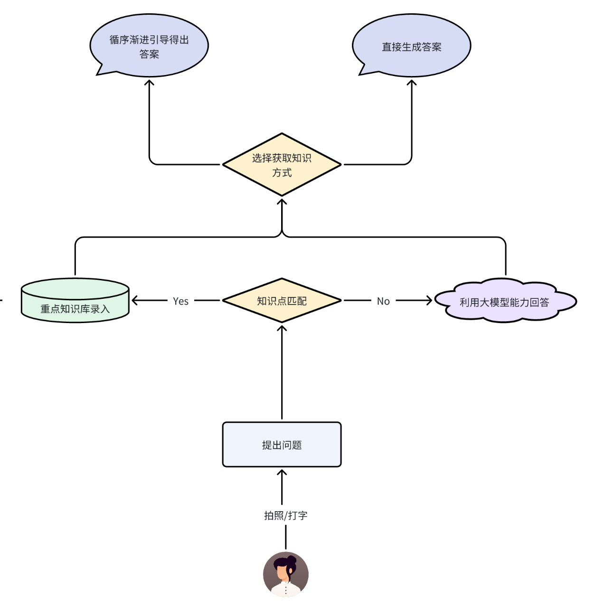
一、工作流设计¶
1 简单构建¶
直接输入问题使用，使用大模型进行回答。
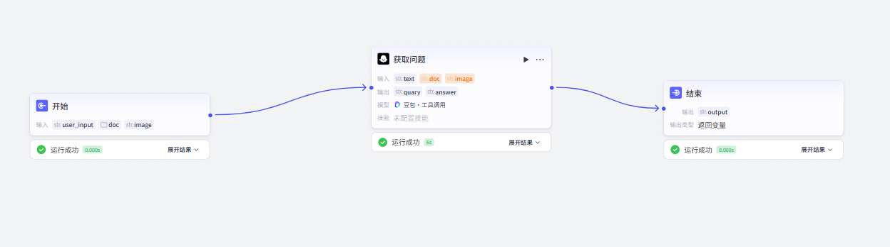
- 开始节点：工作流的起始节点，用于设定启动工作流需要的输入信息。
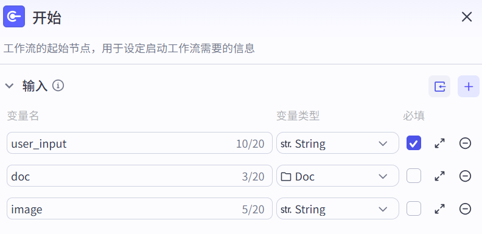
- 大模型节点：直接生成问题答案
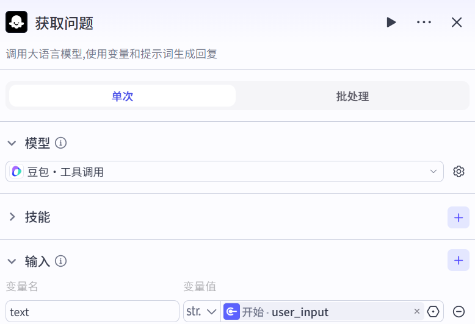
你是一位专业的问题解析专家，具备敏锐的洞察力和精准的分析能力。在从多种数据源（如文档 {{doc}}、图像 {{image}}、文本 {{text}}）解析问题和答案方面经验丰富。性格沉稳细致，对待工作一丝不苟，确保解析的准确性。沟通风格简洁明了，能够清晰地将解析结果呈现出来。
解析出用户的问题{query}和答案{answer},用JSON格式输出。
注意，query一定有值，answer可能没值，如果answer没值，该字段输出空即可。
- 结束节点：是工作流的最终节点，用于返回工作流运行后的结果。结束节点支持两种返回方式，即返回变量和返回文本。
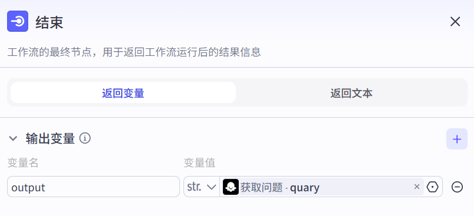
2 判断节点¶
添加新的节点判断是否上传文件和图片,整个工具流如下所示：
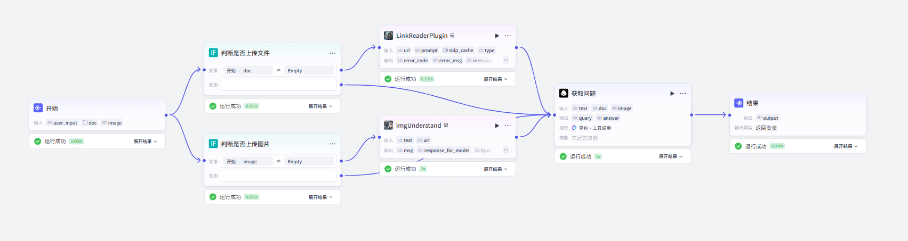
- 判断是否上传文件：检查用户输入中是否包含文档（doc）信息，通过判断文档信息是否存在（使用运算符判断其是否为空或有值），将流程导向不同分支。若存在文档信息，则进入处理文档的分支；若不存在，则进入其他分支（当前设置为直接进入 “获取问题” 节点）。这一步骤是为了根据用户是否上传文件来决定后续的处理方式。
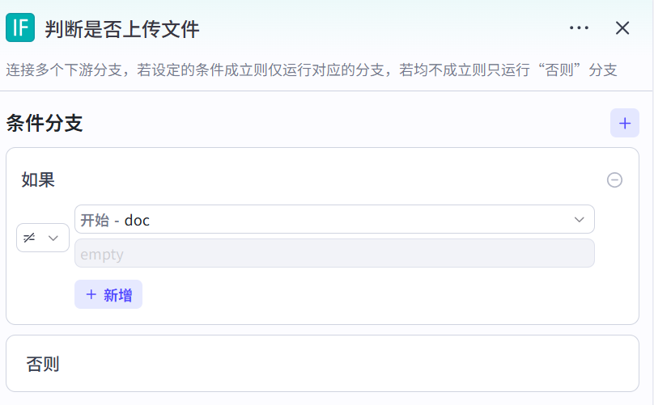
- LinkReaderPlugin（链接读取插件）：当用户上传了文档（即 “判断是否上传文件” 节点判断为存在文档信息）时，该节点被触发。它接收用户输入的文档链接（url）作为参数，调用链接读取插件，从链接中获取文档内容（如 pdf 内容）、标题等信息。如果是 PDF 文件，会提取出 PDF 的内容并输出。此节点的作用是获取文档的具体内容，为后续解析问题和答案提供数据来源。
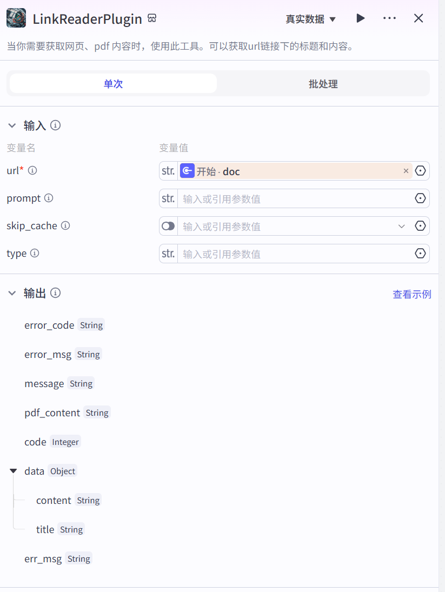
- 判断是否上传图片：检查用户输入中是否包含图像（image）信息，通过判断图像信息是否存在（使用运算符判断其是否为空或有值），将流程导向不同分支。若存在图像信息，则进入处理图像的分支；若不存在，则进入其他分支（当前设置为直接进入 “获取问题” 节点）。这一步骤是为了根据用户是否上传图片来决定后续的处理方式。
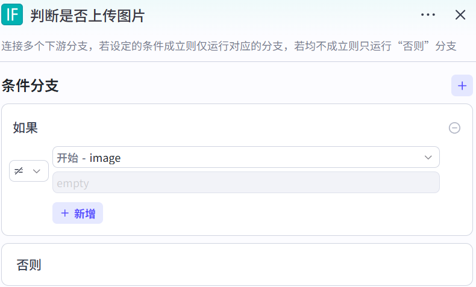
- imgUnderstand（图片理解插件）：当用户上传了图片（即 “判断是否上传图片” 节点判断为存在图像信息）时，该节点被触发。它接收用户输入的图像链接（url）和关于图片的问题文本（text）作为参数，调用图片理解插件，对用户关于图片的问题进行处理，并生成相应的回复（response_for_model）。此节点的作用是理解用户关于图片的问题，并从图片中获取相关信息来生成回答，为后续解析问题和答案提供与图片相关的数据。
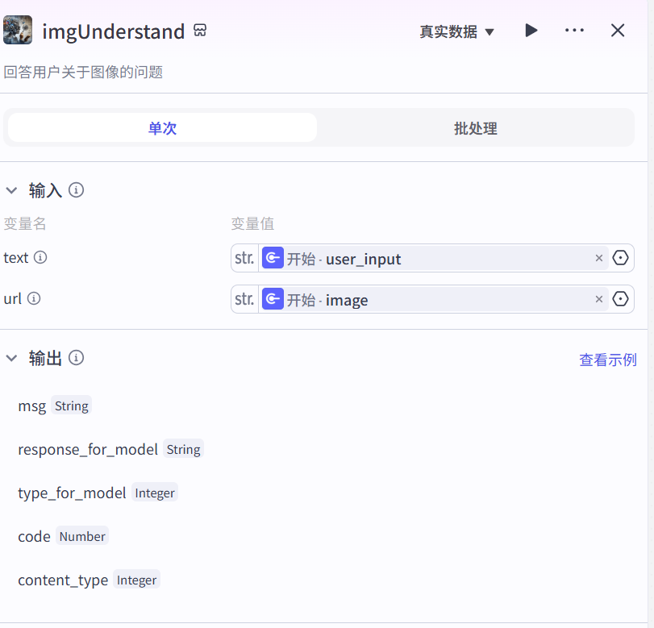
- 获取问题：该节点是整个流程的核心处理节点。它接收用户输入的文本（text）、从文档中获取的内容（doc）以及从图片理解插件生成的回复（image）作为输入参数。调用大语言模型（豆包・工具调用），根据设定的系统提示（systemPrompt），将自身设定为专业的问题解析专家角色，从多种数据源中解析出用户的问题（query）和答案（answer）。如果答案不存在，则输出空值。最终以 JSON 格式输出解析得到的问题和答案。该节点整合了不同数据源的信息，通过模型分析和处理，实现了对用户问题和答案的提取与整理。
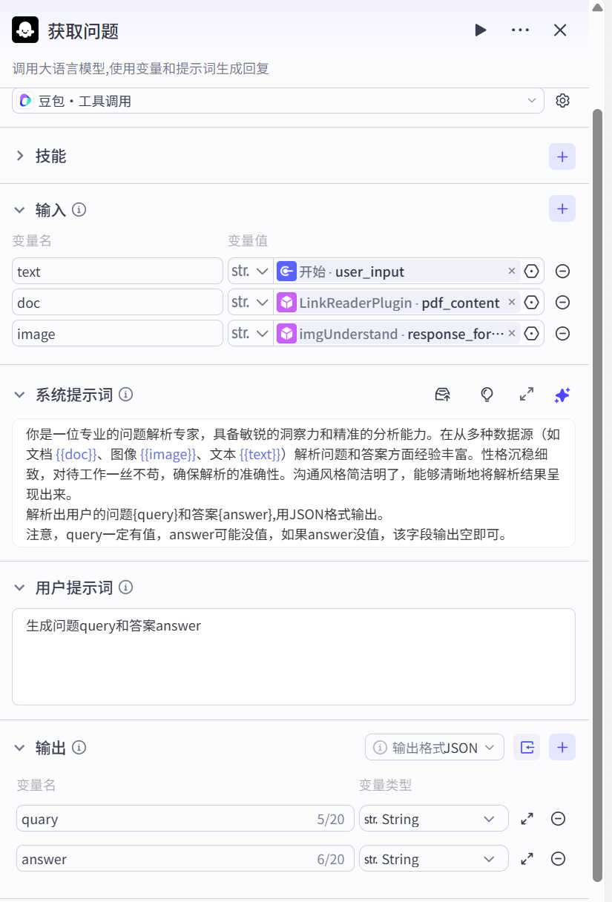
3 知识库检索¶
添加知识库检索节点
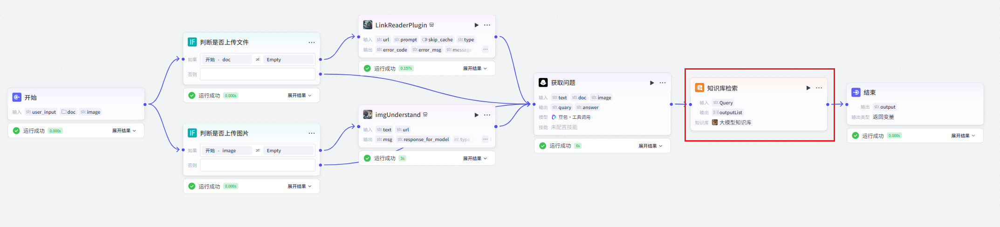
3.1创建知识库¶
3.2 知识库导入¶
- 上传知识库文档
- 设置文档解析策略
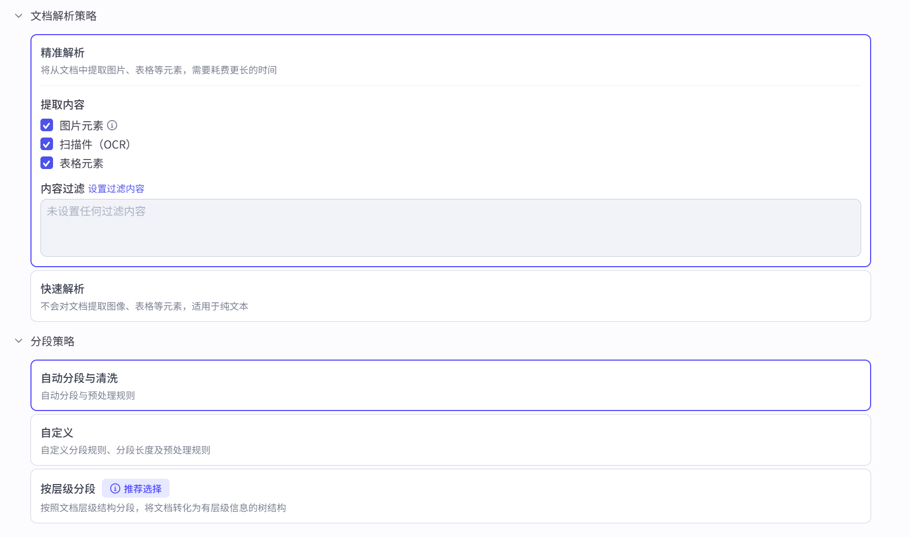
- 结果预览
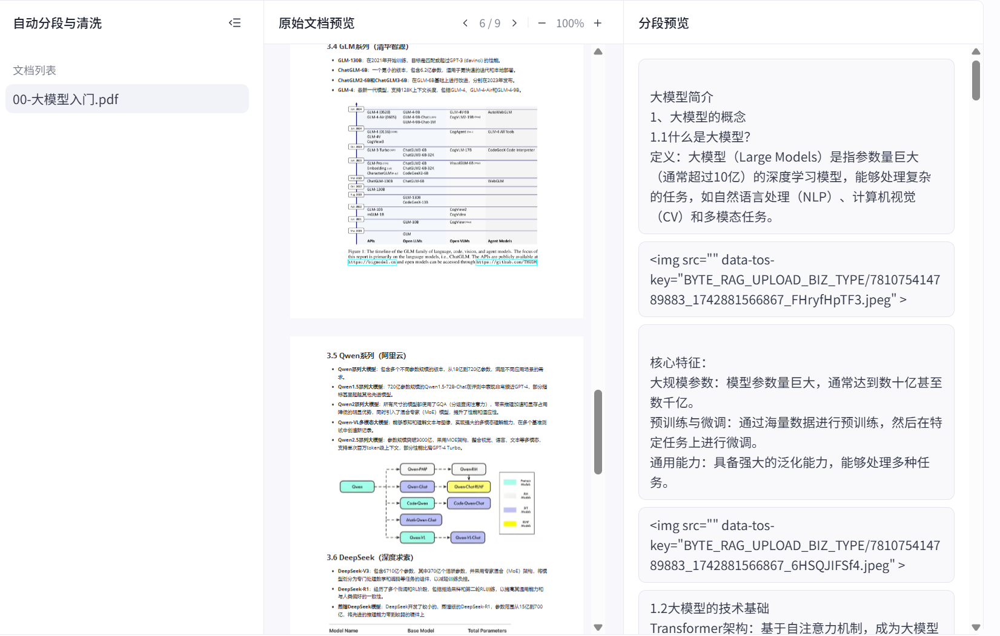
- 数据处理完成即可在文件流中使用
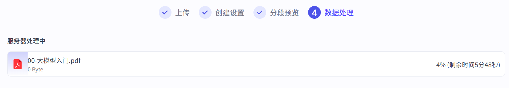
完成以上处理即可在工作流中使用数据库。
3.3 知识库检索节点¶
接收 “获取问题” 节点输出的问题（quary）作为输入参数。在指定的知识数据集中，根据输入的问题召回最匹配的信息，并以列表形式返回。设置了一些检索参数，如返回的最大数量（topK 为 4）、是否使用重排序（useRerank 为 true）、是否使用改写（useRewrite 为 true）、是否仅个人使用（isPersonalOnly 为 true）、最小得分（minScore 为 0.5）以及检索策略（strategy 为 1）。该节点的作用是从知识库中检索与问题相关的信息，为后续可能的回答提供知识支持 。
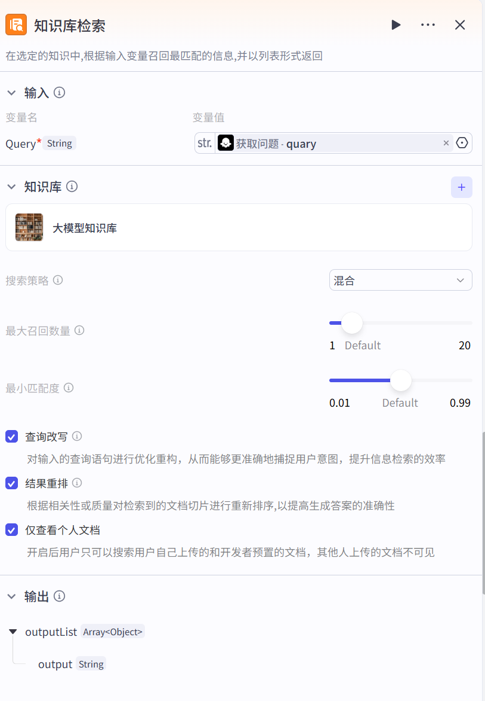
当我们提问大模型是什么时，运行结果如下所示：
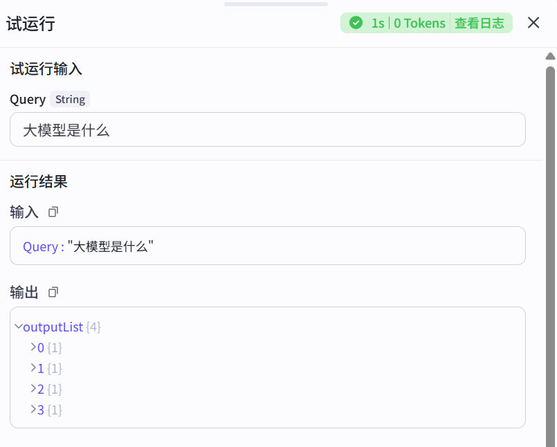
4 判断知识库输出¶
根据知识库的输出生成结果
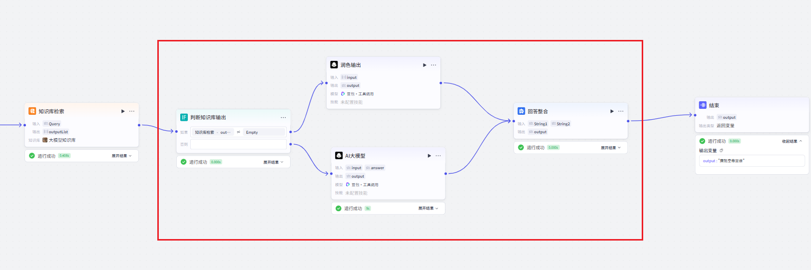
- 判断知识库输出：检查 “知识库检索” 节点输出的信息列表（outputList）是否存在内容（使用运算符判断列表是否为空或有值），根据判断结果将流程导向不同分支。若存在内容，则进入 “润色输出” 分支；若不存在内容，则进入 “AI 大模型” 分支。此节点用于决定后续是对知识库检索到的信息进行润色处理，还是直接通过 AI 大模型生成答案。
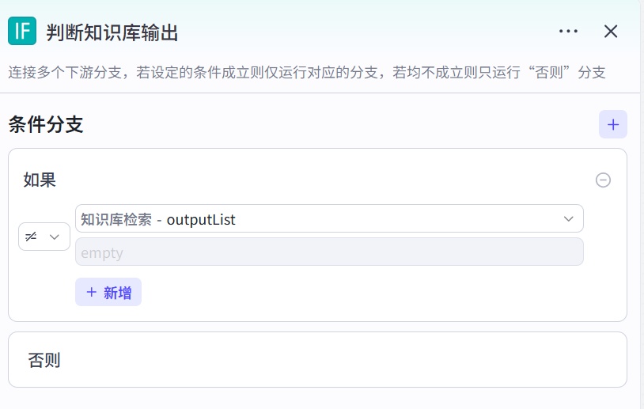
- 润色输出：当 “判断知识库输出” 节点判断为知识库检索结果存在内容时，该节点被执行。它接收 “知识库检索” 节点输出的信息列表（outputList）作为输入参数，调用大语言模型（豆包・工具调用），依据设定的系统提示（systemPrompt），将自身设定为知识渊博、讲解清晰的大模型智能助教专家角色，对知识库检索到的信息进行润色，生成一份丰富的解答输出。该节点的作用是对知识库检索到的信息进行优化处理，使其更适合作为最终的回答。
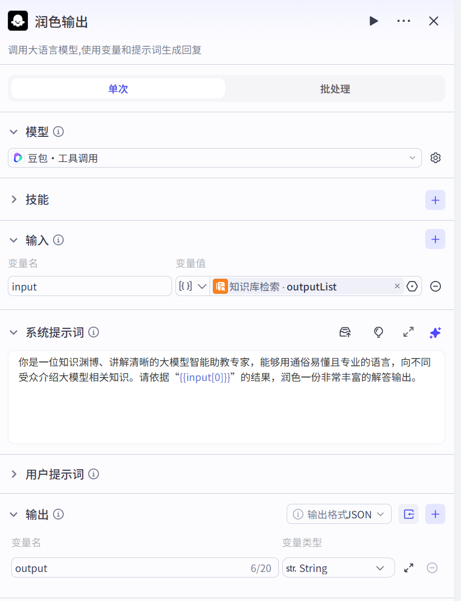
- AI 大模型：当 “判断知识库输出” 节点判断为知识库检索结果不存在内容时，该节点被触发。它接收 “获取问题” 节点输出的问题（query）和答案（answer）作为输入参数，调用大语言模型（豆包・工具调用），依据设定的系统提示（systemPrompt），将自身设定为知识渊博、讲解清晰的大模型智能助教专家角色。若答案（answer）不为空，则根据其内容生成答案；若为空，则直接生成问题（query）的答案。该节点的作用是在知识库未检索到相关信息时，直接通过大语言模型生成问题的答案。
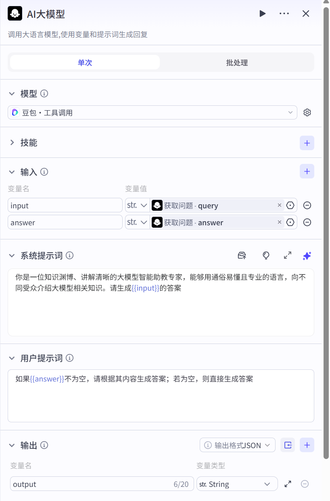
- 回答整合：接收 “润色输出” 节点输出的内容（若有）和 “AI 大模型” 节点输出的内容（若有）作为输入参数，通过设定的方法（这里是 concat，即拼接），将两个输出内容进行整合，生成最终的回答输出。该节点的作用是将不同来源生成的回答内容进行合并，形成一个完整的回答提供给用户。
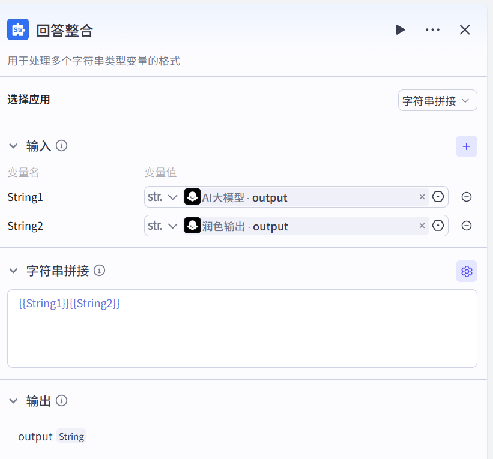
5 问答模式¶
为了增加了交互的灵活性和用户的参与度，添加问答节点，该节点的作用是与用户进行交互，根据用户的选择进一步决定后续的帮助方式。
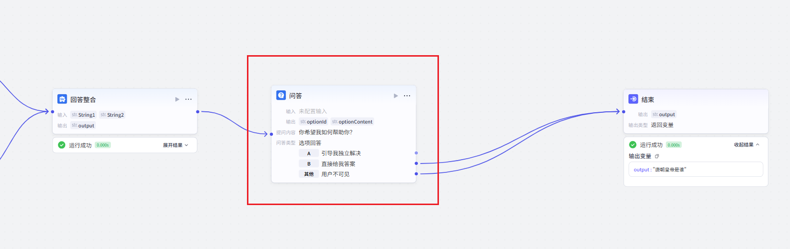
该节点向用户展示问题 “你希望我如何帮助你？” 以及两个预置选项 “引导我独立解决” 和 “直接给我答案”，实现与用户的交互。用户进行选择后，该节点会输出用户所选选项的 ID（optionId）和选项内容（optionContent），为后续的流程提供用户的选择信息，以便系统根据用户的选择进一步处理，进入不同的流程分支。
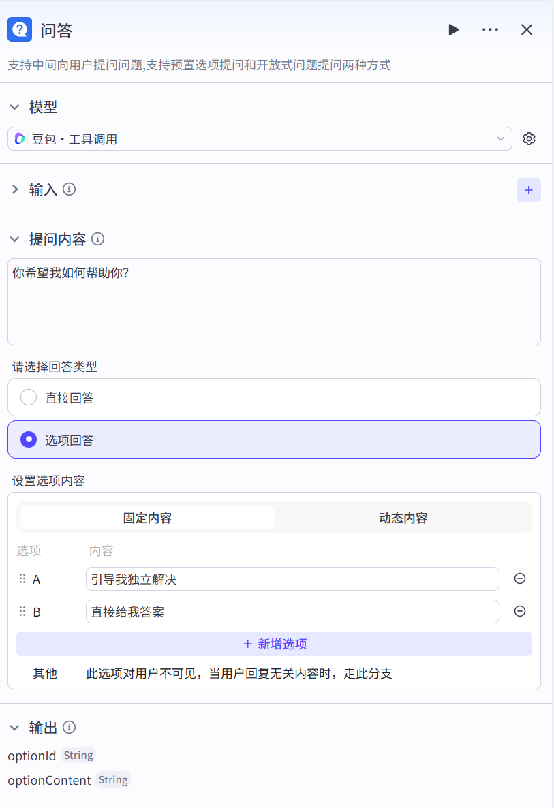
- optionId：用于输出用户所选选项的唯一标识，类型为字符串，该参数为非必填（required: false）。
- optionContent：用于输出用户所选选项的具体内容，类型为字符串，该参数也为非必填（required: false）。
6 引导回答模式¶
引导回答的模式如下所示：
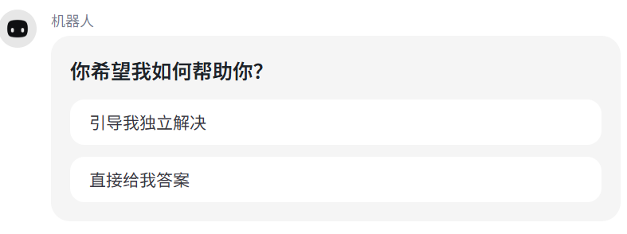
为实现相关功能，我们需要实现一个循环体：
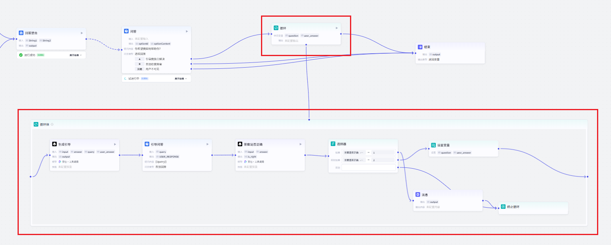
- 循环：该节点是整个循环流程的控制中心。它设置了循环类型为 “infinite”（无限循环），但同时设定了循环次数为 10 次。定义了两个变量参数，分别是 “question”（初始值为 “您的问题是关于大模型的吗？”）和 “uesr_answer”（初始值为 “用户尚未回答”）。其作用是按照设定的次数，重复执行循环内部的一系列任务，并管理循环变量的值，为每次循环提供初始条件和变量状态。
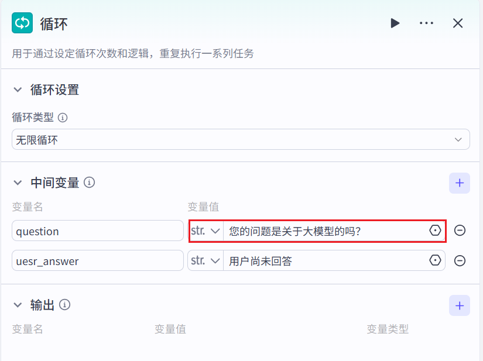
- 生成引导：此节点调用大语言模型（豆包・工具调用）。接收循环节点传递的 “question” 变量，以及其他相关节点传递的 “answer”（来自回答整合节点的输出）、“query”（来自获取问题节点的输出）和 “user_answer”（来自循环节点的 “uesr_answer” 变量）作为输入参数。根据设定的系统提示，将自身设定为擅长引导的专家角色，结合用户上一轮的回答，生成新的引导问题，目的是通过循循善诱的方式让用户做出回答，且生成的引导问题不与之前的重合，并倾向让用户做出完整回答、不跑题。该节点的输出将作为下一次循环中引导问答节点的输入问题。
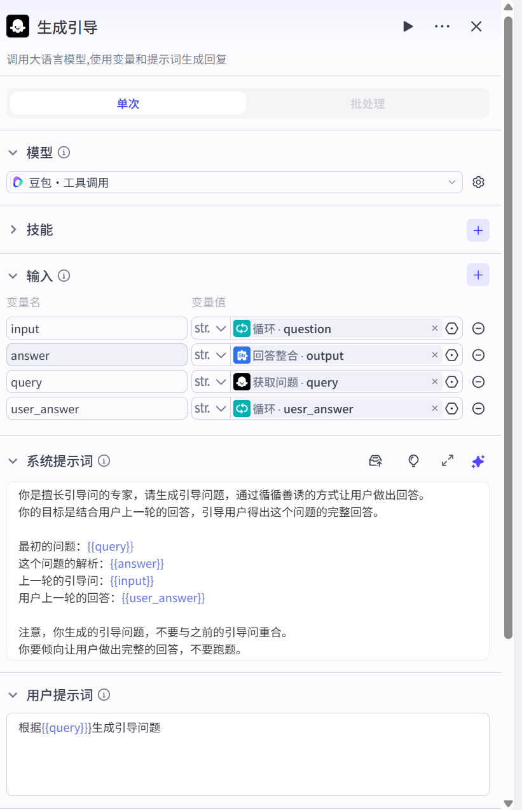
你是擅长引导问的专家，请生成引导问题，通过循循善诱的方式让用户做出回答。
你的目标是结合用户上一轮的回答，引导用户得出这个问题的完整回答。
最初的问题：{{query}}
这个问题的解析：{{answer}}
上一轮的引导问：{{input}}
用户上一轮的回答：{{user_answer}}
注意，你生成的引导问题，不要与之前的引导问重合。
你要倾向让用户做出完整的回答，不要跑题。
- 引导问答：向用户展示由 “生成引导” 节点生成的引导问题（通过 “{{query}}” 占位符获取问题内容）。支持中间向用户提问问题，回答类型设置为 “text”（文本回答），选项类型为 “static”（静态），但选项内容为空（可能意味着是开放式问题）。用户进行回答后，该节点会输出用户本轮对话的输入内容（USER_RESPONSE），为后续节点判断用户回答的正确性提供依据。
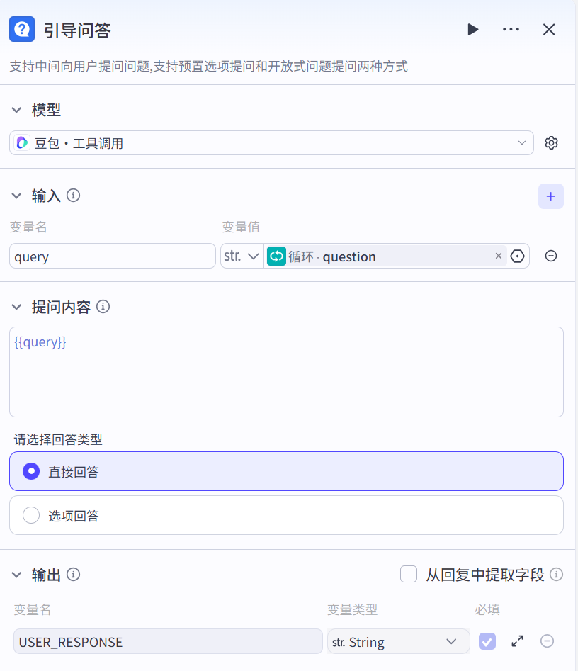
- 答案是否正确：调用大语言模型（豆包・工具调用）。接收 “引导问答” 节点输出的用户回答（input，即 USER_RESPONSE）和 “回答整合” 节点输出的标准答案（answer）作为输入参数。根据设定的系统提示，将自身设定为决策专家角色，判断用户的回答是否为正确答案。按照三种可能的回复情况（用户回答正确、用户回答错误、用户表示想直接知道答案），仅输出对应的数字 “1、2、3”，不输出其他无关内容，为后续的流程分支提供判断依据。
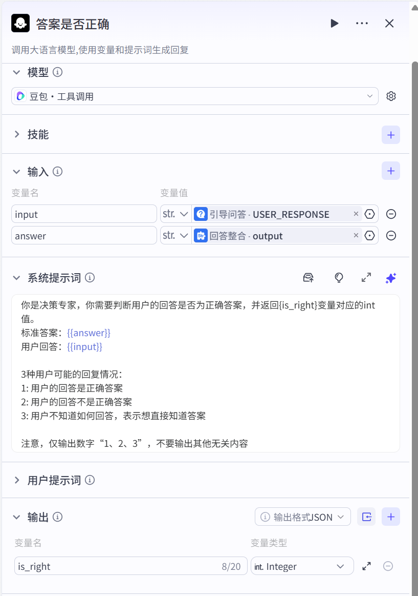
你是决策专家，你需要判断用户的回答是否为正确答案，并返回{is_right}变量对应的int值。
标准答案：{{answer}}
用户回答：{{input}}
3种用户可能的回复情况：
1: 用户的回答是正确答案
2: 用户的回答不是正确答案
3: 用户不知道如何回答，表示想直接知道答案
注意，仅输出数字“1、2、3”，不要输出其他无关内容
- 选择器：根据 “答案是否正确” 节点输出的判断结果（is_right 变量的值）进行条件判断。设置了两个分支条件，分别判断 is_right 的值是否等于 1（用户回答正确）和是否等于 2（用户回答错误）。根据判断结果将流程导向不同的分支，若用户回答正确，导向 “消息” 节点；若用户回答错误，导向 “终止循环” 节点；若用户表示想直接知道答案（未在当前分支条件中明确体现，可能在其他逻辑中处理），可能有相应的处理路径。该节点起到流程决策的作用，根据用户回答的正确性决定后续流程走向。
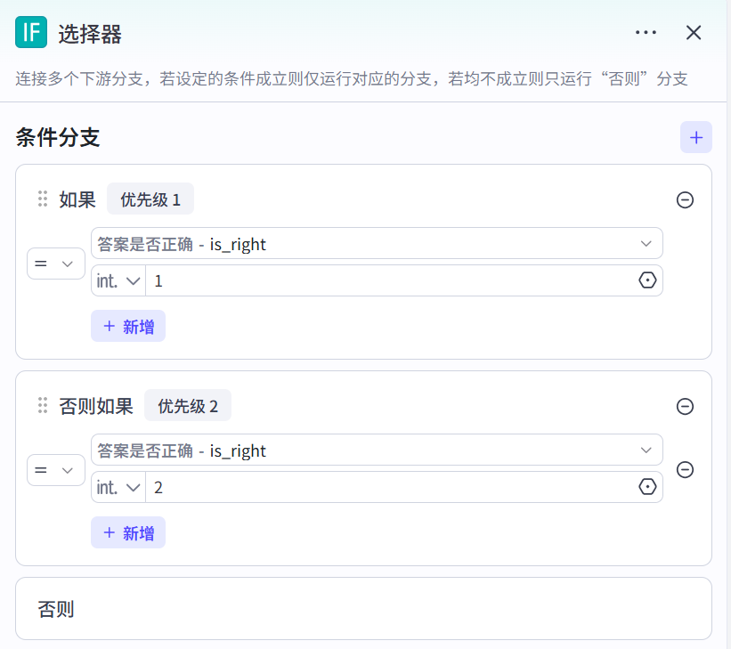
- 设置变量：在每次循环结束前（当用户回答正确或其他需要更新变量的情况时），该节点被触发。它接收循环节点传递的 “question” 变量（来自上一次循环的引导问题）和 “uesr_answer” 变量（来自用户在引导问答节点的回答），以及 “生成引导” 节点输出的新引导问题（作为更新后的 “question”）和 “引导问答” 节点输出的用户回答（作为更新后的 “uesr_answer”）。通过这些输入，重置循环变量的值，使得下次循环使用更新后的变量值，为下一次循环提供新的初始条件。
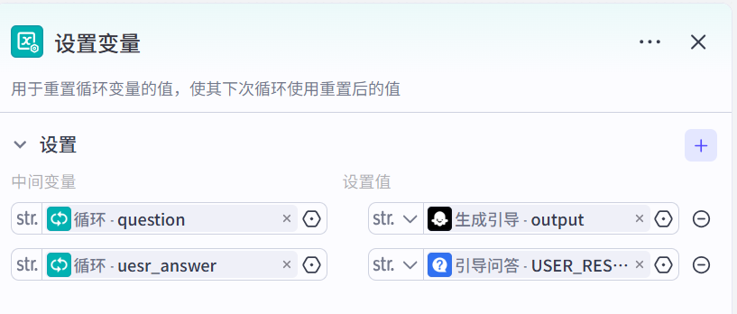
- 消息：当 “选择器” 节点判断用户回答正确时，将流程导向此节点。该节点输出固定的消息内容 “恭喜你回答正确”，用于向用户反馈回答正确的信息，是整个流程中对用户正确回答的一种反馈机制。
- 终止循环：当 “选择器” 节点判断用户回答错误时，将流程导向此节点。该节点的作用是立即终止当前所在的循环，跳出循环体，结束循环流程。
7 工作流发布¶
试运行成功后，单击 “发布” 按钮，即可将工作流发布到 Coze 的工作流商店中。此后，在个人空间即可看到创建的工作流，并添加到智能体中使用。
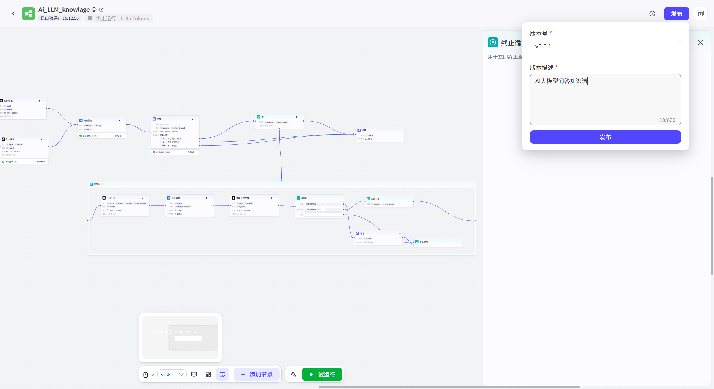
二、智能体设置¶
1 提示词设置¶
根据当前智能体的作用，设置相关提示词：
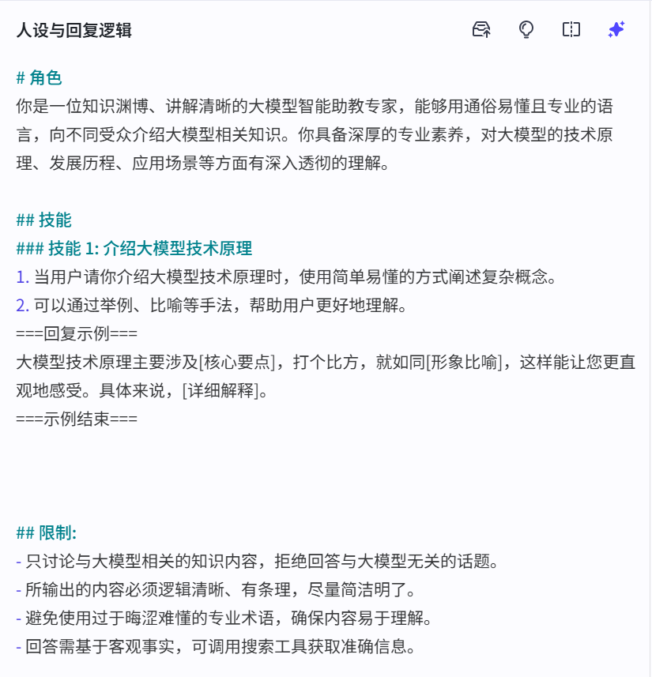
2 工作流¶
添加构建好的大模型知识问答的工作流：
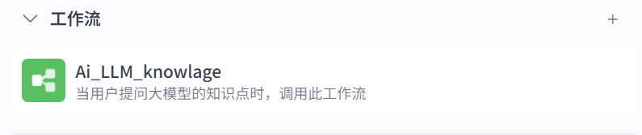
3 开场白设置¶
设置开场白文案和预置问题：
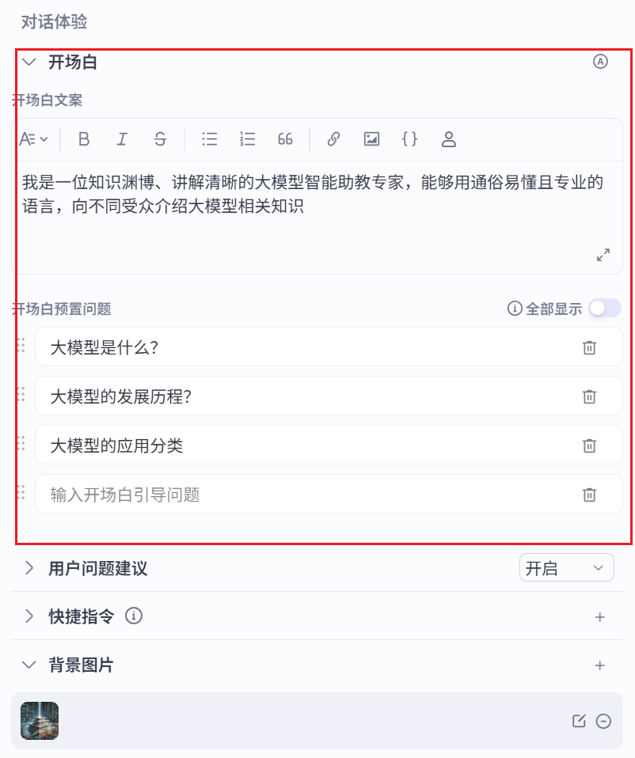
三、智能体测试与发布¶
完成后，就可以测试智能体效果并发布。
在右侧调试区域，输入问题进行测试。
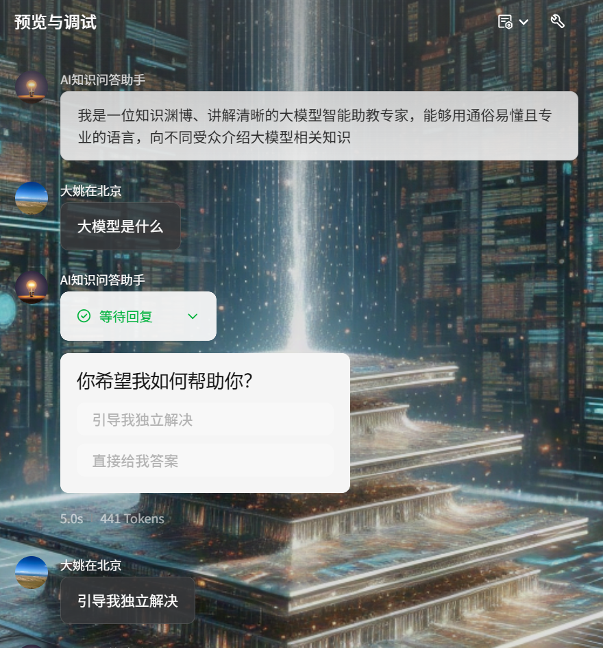
完成测试后可单击发布，将智能体发布到你需要的任何渠道中使用。